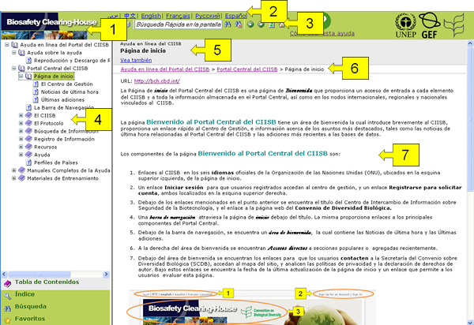
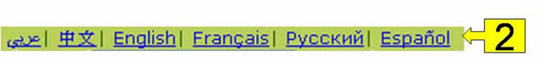
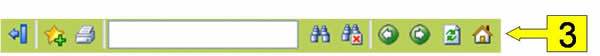
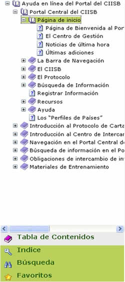
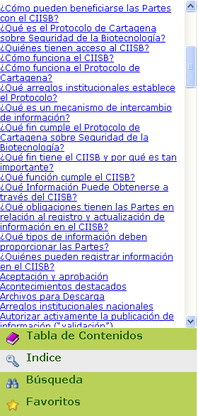
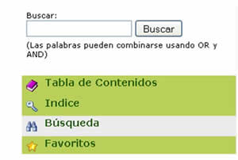
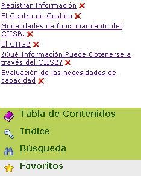

El objetivo de este tópico es proporcionar ayuda y guía en el uso de este Sistema de Ayuda en Línea.
Este Sistema de ayuda en línea brinda ayuda en el uso del Portal Central del CIISB. Los tópicos de ayuda están disponibles para ser leídos en línea y también para descargar en el formato de Módulos de Entrenamiento (https://bch.cbd.int/help/topics/en/webframe.html?Training_Modules.html).
La información tratada en el Sistema de Ayuda en Línea está dividida en partes mínimas llamadas tópicos. Este es un sistema de ayuda sensible al contexto, lo que significa que las páginas del CIISB están vinculadas a los tópicos de ayuda de manera que cuando el usuario del CIISB necesita ayuda en una página del CIISB, será conducido directamente a un tópico de ayuda relevante de acuerdo al contexto (página web) en que éste se encontraba dentro del CIISB. Para acceder a la ayuda sensible al contexto de una página web, haga clic en el signo de interrogación ubicado en la esquina superior derecha de la pantalla.
La resolución de pantalla recomendada para este Sistema de Ayuda es 1024x768 píxeles o superior. Este Sistema de Ayuda ha sido probado y funciona con los exploradores de internet Mozilla Firefox e Internet Explorer.
En la siguiente figura se muestra la página principal del Sistema de Ayuda en Línea.

Los componentes ilustrados en la figura son los siguientes:
-
Logo del CIISB: al hacer clic en este logo se redirecciona el navegador a la página de inicio del Portal Central del CIISB.
-
Barra de idioma: Esta barra proporciona enlaces para acceder al Sistema de Ayuda en Línea en cualquiera de los seis idiomas oficiales de NU.

-
Barra de navegación:

-
Ocultar navegación: al hacer clic en este icono el usuario puede seleccionar si desea que el área de navegación (descripta en el punto 4) sea visible. Si está actualmente visible, un clic en el ícono la hará desaparecer. Otro clic la hará aparecer nuevamente.
-
Agregar a favoritos: a través de este enlace el usuario puede agregar tópicos a la lista de tópicos favoritos. Los enlaces a éstos tópicos aparecerán en la sección Favoritos del área de navegación. Esto es muy útil para administrar en un lugar aquellos tópicos que el usuario usa más frecuentemente, sin tener que buscarlos en la tabla de contenidos, el índice o la sección de búsqueda. Debe tener en cuenta que, para recordar los tópicos que seleccione como favoritos, deberá tener las cookies activadas.
-
Imprimir tópico: haga clic en este ícono para imprimir el tópico que se encuentra visible en el panel de información.
-
Búsqueda rápida: si desea buscar partes de palabras o palabras enteras en el tópico que aparece en el panel de información, puede ingresar el texto en el área de texto y luego hacer clic en el ícono para realizar la búsqueda. El texto buscado aparecerá destacado cada vez que se encuentre en el título del tópico, la ruta, o el panel de información.
-
Borrar búsqueda: al hacer clic en éste ícono se dejará de resaltar el texto destacado por la funcionalidad de búsqueda rápida. Esta página se verá como si no hubiese hecho ninguna búsqueda. Tome en cuenta que el texto que ingresó en el área de búsqueda quedará ahí, por si desea rehacer la búsqueda.
-
Atrás/Adelante: al navegar entre los tópicos, el Sistema de Ayuda en Línea recordará el orden en que los visitó y le permitirá moverse hacia atrás y hacia adelante en las páginas. De esta manera podrá fácilmente acceder a los tópicos con los que está trabajando, sin tener que volver a buscarlos en la tabla de contenidos, el índice o la sección de búsqueda.
-
Actualizar: al hacer clic en este ícono el usuario puede actualizar el tópico como si entrara en la página por primera vez. Tome en cuenta que si una búsqueda había sido realizada, el texto destacado dejará de estarlo.
-
Inicio: este ícono cambia la página actual a la página de inicio, que corresponde al tópico “Portal Central del CIISB” el cual es la primera entrada en la tabla de contenidos.
-
-
Navegación: el área de navegación proporciona diferentes formas de acceder a los tópicos contenidos en el Sistema de Ayuda en Línea. La forma en la que busca un tópico depende de la sección que esté seleccionada. Las secciones posibles son:
-
Tabla de Contenidos: al seleccionar la tabla de contenidos, los tópicos de ayuda serán presentados en el área de navegación jerárquicamente. El usuario puede navegar entre estos grupos libremente; de esta forma, la navegación se vuelve muy intuitiva porque el usuario encuentra la información organizada. Al hacer clic sobre un tópico, su contenido será cargado en el panel de información y se desplegarán los subtópicos en la tabla de contenidos, si los hay. El tópico cuya información se está mostrando en el panel de información aparece resaltado en verde en la tabla de contenidos.

-
Índice: cuando selecciona la sección del índice, aparece en el área de navegación una lista con cada tópico contenido en el Sistema de Ayuda en Línea ordenada alfabéticamente. El usuario puede entonces abrir el contenido del tópico que quiera al hacer clic en la entrada del índice que corresponda con el nombre del tópico. Esta opción de navegación puede ser muy útil si está buscando un tópico cuyo nombre ya conoce. De lo contrario, se le recomienda navegar por los tópicos en la tabla de contenidos.

-
Búsqueda: a través de esta opción el usuario puede buscar palabras claves en el contenido de los tópicos. Éste puede ingresar sólo una palabra, o una combinación de palabras enlazadas por los conectores OR o AND. Una vez que el usuario haya ingresado las palabras y hecho clic en el botón Buscar, una lista de los tópicos que contienen esa combinación aparecerá en el área de navegación.
Por ejemplo, una búsqueda por “organismo OR gen” desplegará todos los tópicos que contienen al menos una de las dos palabras, mientras que una búsqueda por “organismo AND gen” desplegará todos los tópicos que contienen ambas palabras.
-
Favoritos: el Sistema de Ayuda en Línea le ofrece al usuario la posibilidad de tener una lista de tópicos favoritos. En el área de navegación de la sección Favoritos se guardarán enlaces directos a dichos tópicos. Tenga en cuenta que para recordar y ver los enlaces favoritos que haya seleccionado en una sesión anterior necesita tener las cookies habilitadas. Además, al lado de cada enlace de tópicos favoritos encontrará una cruz roja. Al hacer clic en esta cruz se borrará el enlace de la lista.

-
-
Barra de Título: en esta barra el usuario verá, primer que nada, el título principal del Sistema de Ayuda en Línea (Ayuda en Línea del CIISB). Luego, en la segunda línea aparece el nombre del tópico que se está mostrando en el panel de información. Si el tópico contiene enlaces a otros tópicos en su sección "vea también", aparecerá una tercera línea con un enlace a esa sección del tópico.
-
Ruta: esta barra muestra la posición actual dentro de la jerarquía global del Sistema de Ayuda en Línea, compuesta por el camino en la tabla de contenidos que lleva al tópico actual. Además, se proporciona un enlace a cada entrada intermedia.
-
Panel de información: en este panel se muestra el contenido del tópico seleccionado. En la parte inferior se puede incluir una lista de enlaces del tipo Vea también para investigar más en tópicos relacionados.